Every bag was unique. The brand had to be the one thing that repeated.
NUCU began as a creative exercise: five pieces meant to bring together everything we had at hand, traditional textiles, leather and design. People liked them, orders followed, and the exercise grew into a studio. The identity had to grow with it.
Each piece used a different hand woven textile, so color, pattern and texture changed from bag to bag. The identity could not compete with the textile: it had to frame it, and stay recognizable on any fabric, any material and any surface the studio produced.
Stacked
Name
NU over CU: the four letter name stacked into two rows of two, so the mark becomes a near square block that fits a woven tag, an acrylic plate, a leather patch or the edge of a photograph. The letters are drawn, not typed: heavy stems, square counters, and rounded corners only on the outside of each bend.
Specification, in drawing units
172 × 237 units, a ratio of 1 : 1.38. Two rows of two letters.
74 × 108 units, a width to height ratio of 0.69. All four letters share one box.
Vertical stems 25 units, horizontal bars 22 units. Bars run 12% lighter than stems, the usual optical correction: horizontals read heavier than verticals of the same weight.
24 units between letters, 21 units between rows. The row gap is tighter so the block reads as one shape, not two words.
Outer radius 10 units, only on the outside of each bend. Counters and stem ends stay square.
x = 24 units, the letter gap, on all four sides.
Seven
Finishes
One drawing, finished seven ways. Flat versions live on paper and screens; physical versions are woven, cut, embossed or pressed into the material, so the mark never needs a printed sticker on a handmade piece.
Flat
Physical
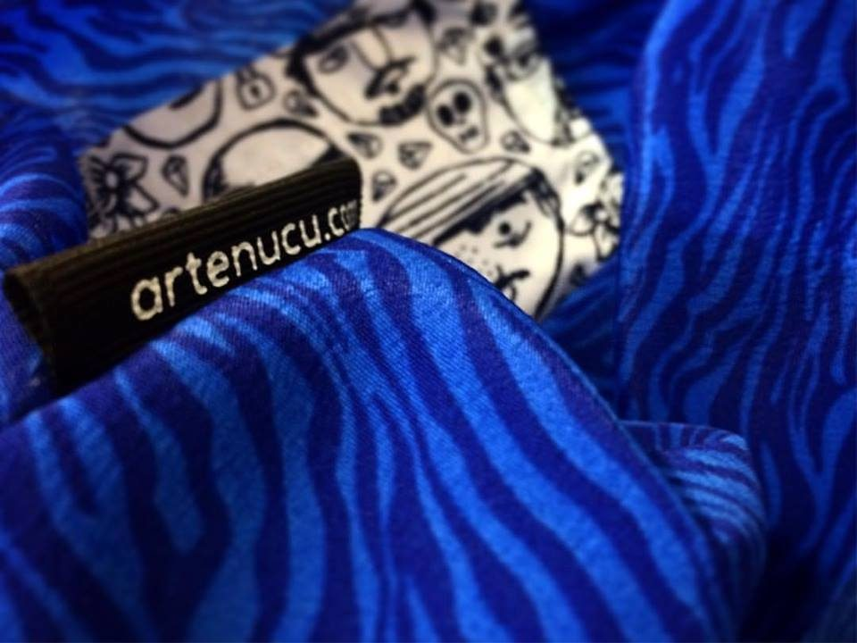
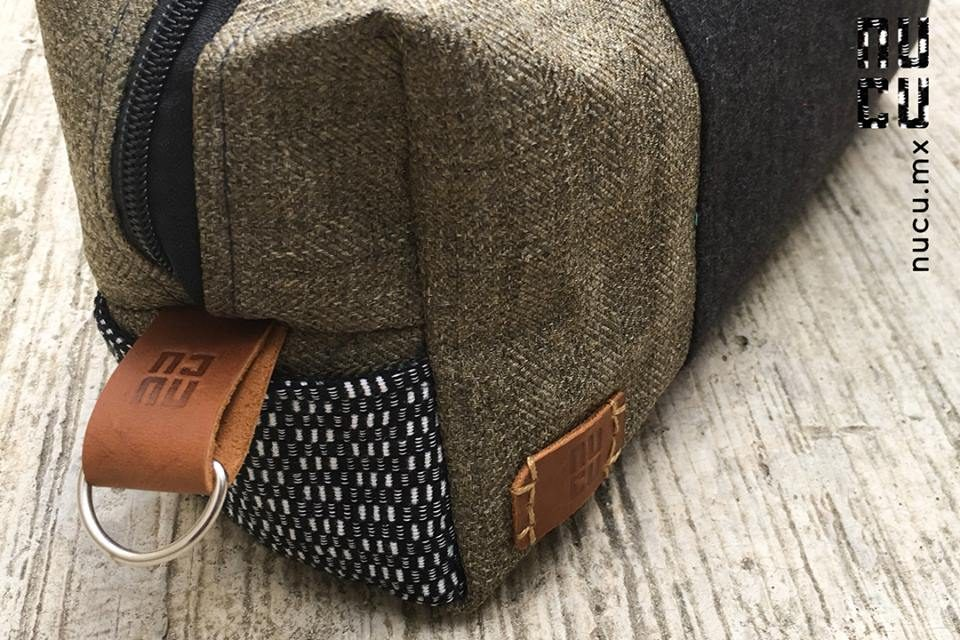
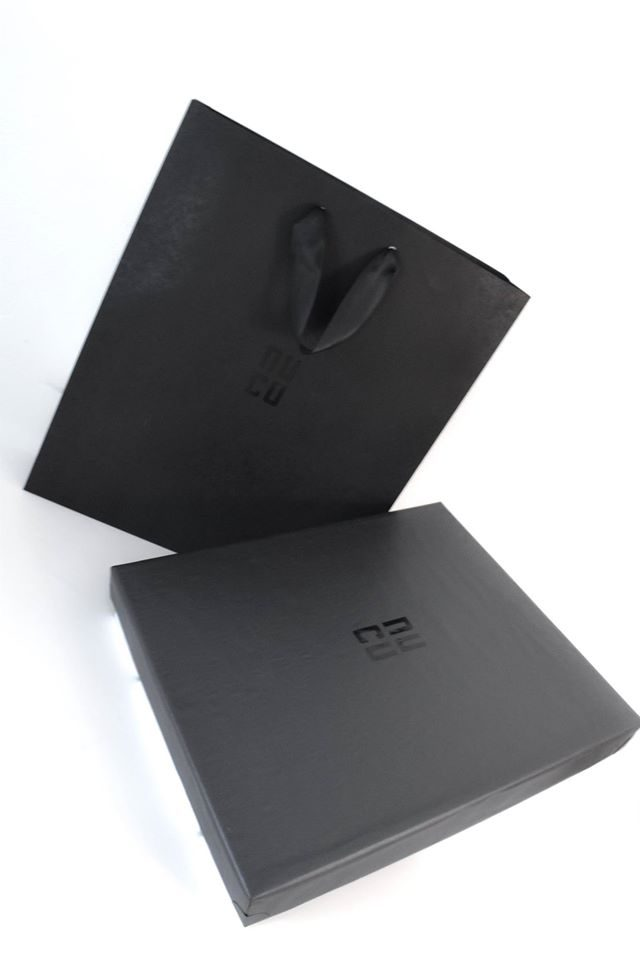
The Textile
Brings Color
The brand owns three colors and borrows the rest. Black, white and the cognac of the leather are fixed; everything else comes from the hand woven textile of each piece and changes with it. Values sampled from photographs of the shipped pieces; for print, match against the physical leather and the packaging stock.
Brand colors: fixed
Textile colors: borrowed, never fixed
Quiet
Type
Two voices only. The drawn mark carries the name; ITC Avant Garde Gothic carries everything else: the address on the woven tag, the vertical signature on photographs, the names and callouts on the product sheets. Both are built from the same geometry, straight stems and full curves, so the type reads as part of the mark rather than next to it.
Specimens below are set live in TeX Gyre Adventor, an open source revival of the same design.
Specification
ITC Avant Garde Gothic, Herb Lubalin and Tom Carnase, ITC, 1970. A geometric sans grown out of Lubalin’s logo for Avant Garde magazine: circular bowls, a single story a, a very large x-height.
The mark is straight stems with rounded outer corners; Avant Garde is straight stems with full circles. Same construction, different job. The large x-height keeps lowercase legible at the sizes the brand lives at: a woven tag, a strip on the edge of a photograph.
On the photo signature the stem is 0.25 of the x-height. Demi measures 0.246 and Book 0.143, so the signature is set in Demi: heavy enough to sit next to the mark without disappearing.
Addresses and names in lowercase only, at default tracking. No letterspaced capitals: the geometry is the character, spacing would break it.
Address set vertically, reading top to bottom, flush with the right edge of the mark. Its x-height is 13% of the mark height, so the two read as one unit from across a room and as two layers up close.
Product name under the gray mark, callouts small and gray with hairline leaders, so the drawing of the product leads the sheet.
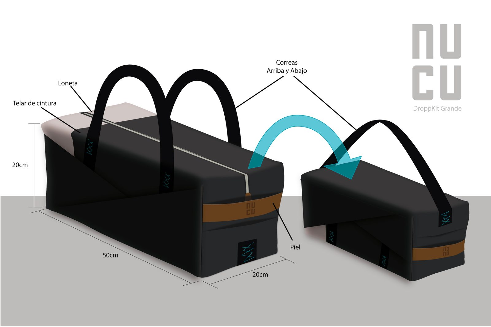
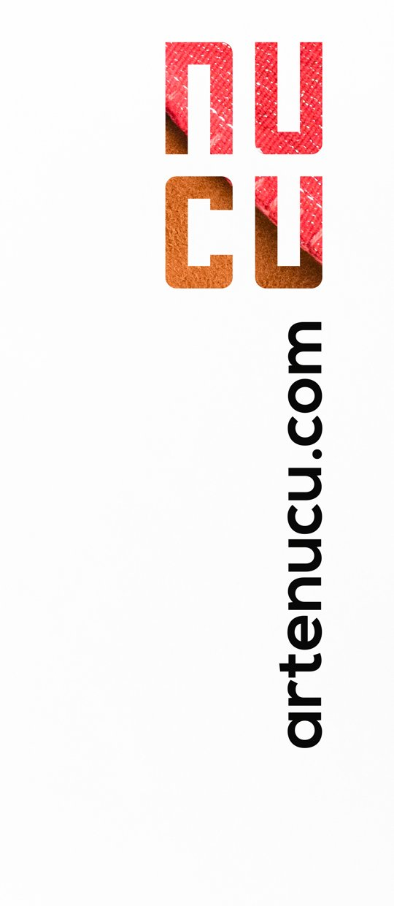
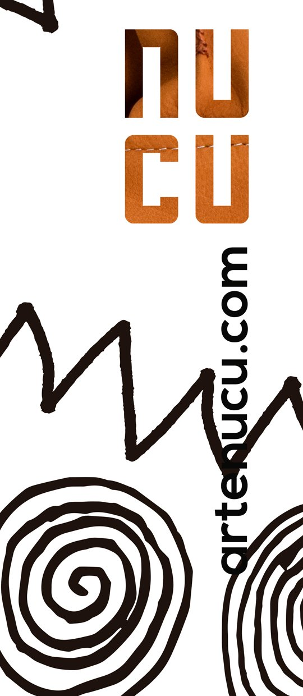
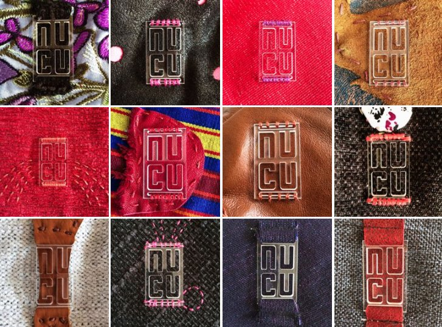
Signed
Twice
Every piece carries the mark twice. Inside, the woven tag with the address. Outside, an acrylic plate or a leather patch, placed on a strap, a band or a flap where the hand finds it, never over the textile itself. The plate was tested on twelve fabrics before production.
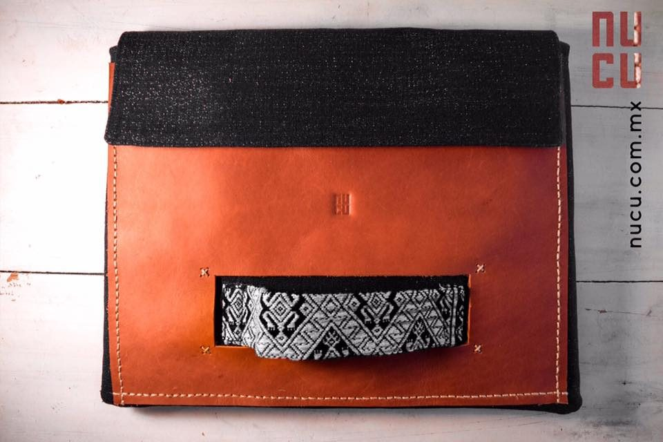
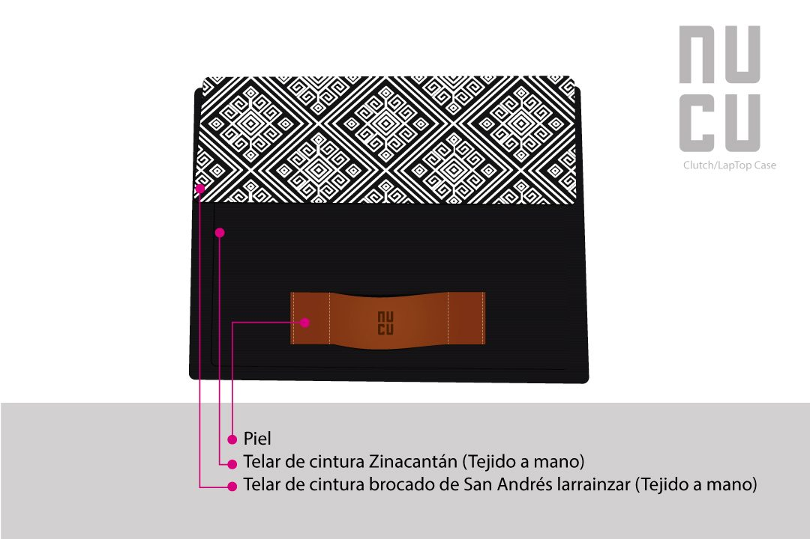
The Frame
Signs
I produced, directed and shot NUCU’s photography: several fashion shoots and a product shoot every two months. Many shoots, one signature. Every frame carries the mark top right, filled with the textiles of the bag in the picture, and the address set vertically below it. The illustrated set placed the bags against hand drawn walls, with concept and illustrations by Eek; the studio sets showed each bag on white from every angle.
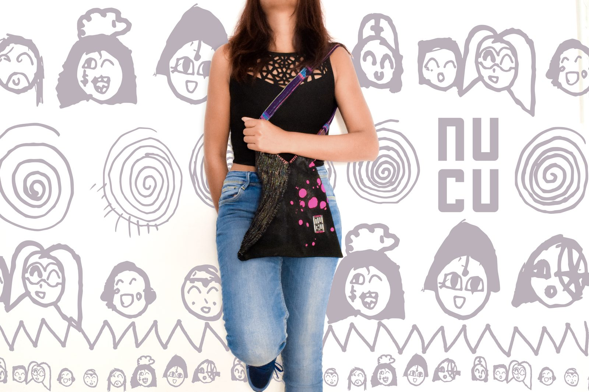
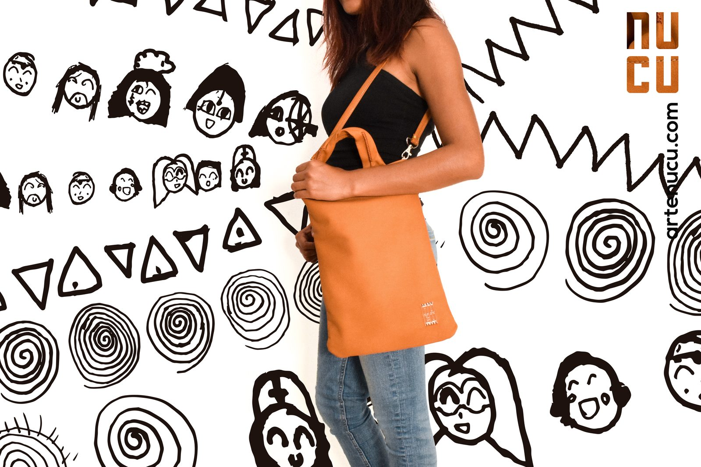
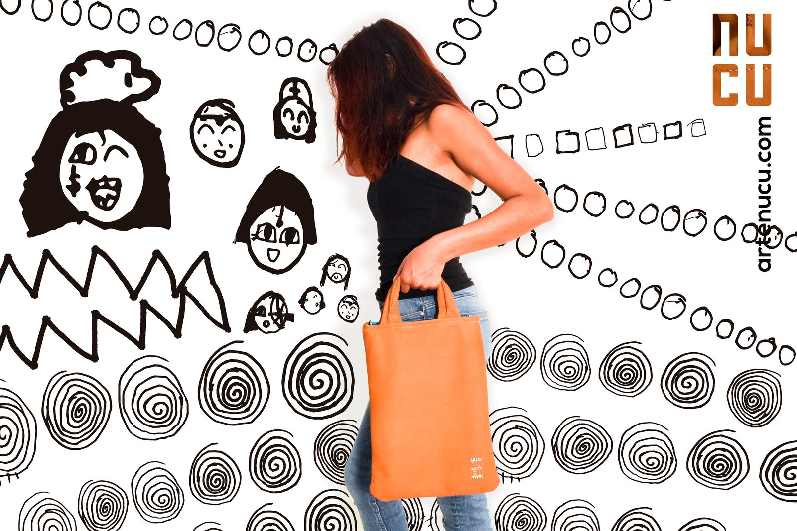
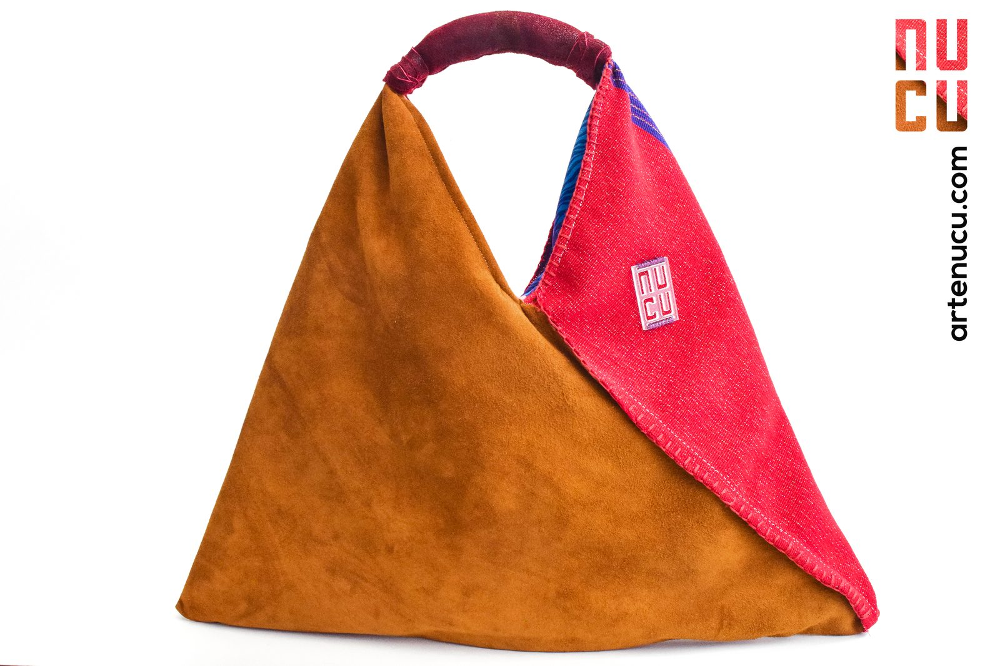
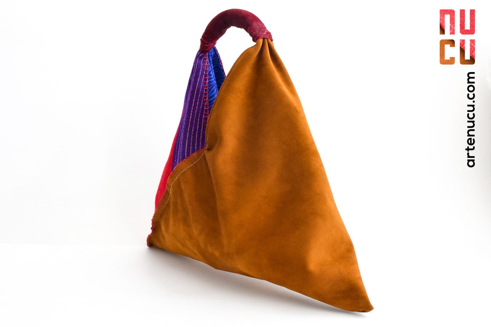
Matte
and Mute
Packaging is the brand at its quietest: matte black envelope, gift bag and box, the mark embossed black on black, and a white dust bag carrying the woven tag. The color stays with the product. Two short video teasers, edited in Premiere Pro and After Effects, introduced the brand.
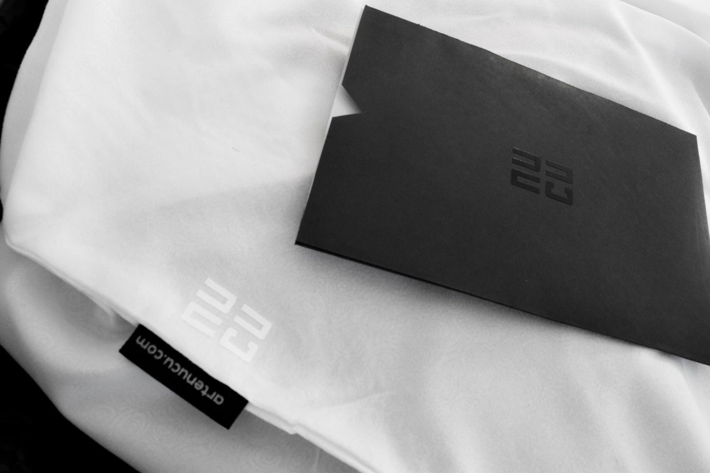
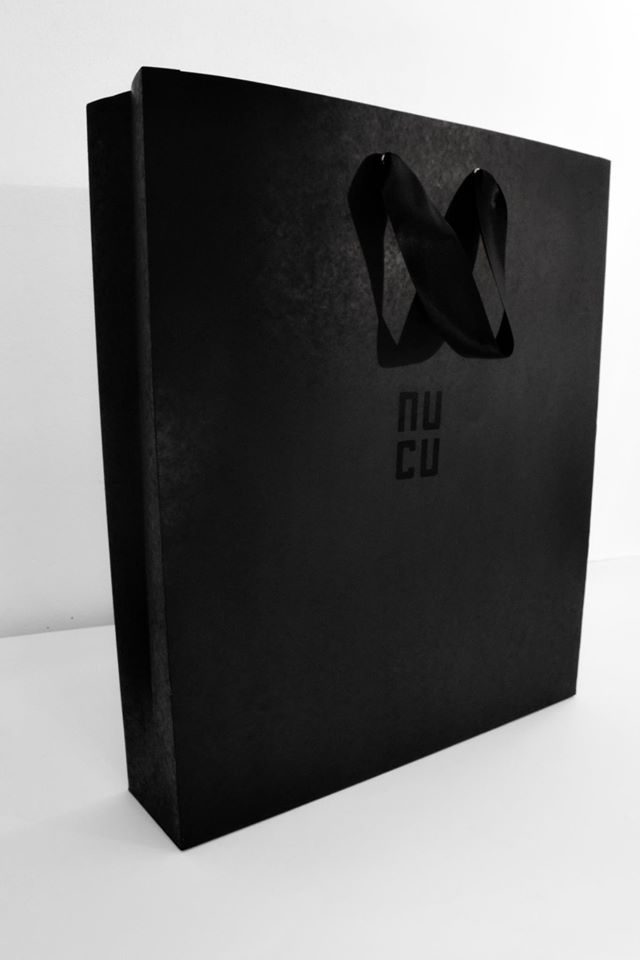
Rules
That Travel
A brand made of unique pieces only stays one brand if the rules travel with the work: to the workshop, to the photo set, to the printer. These are the rules the system ran on.
Never
How it was kept consistent
Every use starts from the same stacked drawing. Woven, pressed, embossed, printed or filled with texture, the shape never changes.
Every product sheet used the same frame: white page, gray floor, gray mark top right with the product name below it, callouts in one small size. New products entered the line looking like the line.
Mark top right, address set vertically below it, on every frame of every set. When the address changed from artenucu.com to nucu.com.mx, the signature stayed and only the line of text was replaced.
The acrylic plate was tried on twelve fabrics, from leather and suede to embroidered textiles, before it went on a single bag.
Brand surfaces use black, white and leather only. Any other color on a NUCU surface comes from the textile of the piece.
The same identity carried NUCU from local sales in Chiapas to the whole country and to exports in Europe and the United States.
The acrylic plate was tried on twelve fabrics before production, so the mark worked on every material the studio used.
The photo signature survived the move from artenucu.com to nucu.com.mx without a redesign.
More Than
a Label
What Went Well?
One Brand on Unique PiecesNo two bags looked alike, yet every one read as NUCU: the mark, the leather and the black framed each textile instead of competing with it. That consistency is what let the studio grow systematically from its second year.
What Could I Have Done Better?
Give the Brand SeasonsThe identity framed unique pieces, but the brand had no seasonal lines to carry. Limited series by season, alongside the unique pieces, would have given the brand more weight and a wider reach.